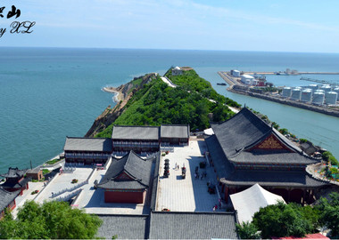

笔架山是坐落在辽宁锦州笔架山风景区内的山峰，位于我国辽宁省西部，面对渤海，毗邻锦州港，坐落在锦州经济技术开发区内。是道教名山胜地，山有三峰，二低一高，形如笔架。
闾山分北部、中部、南部、东部四个主要游览区，共计一百多个景点。 闾山以寺院为中心形成了十大景区：大石棚、圣水盆、观音阁、白云观、辽代肖太后蜡像馆、元代宰相耶律楚材读书堂、玉泉寺、药王庙、祖峰长城，新建的千米索道把大阁、玉泉寺两景区连为一体。远眺峰峦翠色，近睹千丈危岩，景色秀丽，姿态万千，像一幅恢弘博大的泼墨画卷，给人以美的享受和无尽的遐想。目不暇接的奇峰怪石；千资百态的苍松翠柏；水丝如簾的石棚飞瀑；梨花巧构的“香雪海”，真可谓人间仙境，壮美瑰丽。。
笔架山风景区以笔架山岛和“天桥”为主要景点，大致分为岛上游览、海上观光、岸边娱乐、沙滩海浴和度假修养五个区域。总面积8平方公里，其中陆地面积4.72平方公里，海域面积3.28平方公里。这里山水秀丽，环境优美，物产资源丰富，生活服务设施配套，交通便利。自然景点密集，有马鞍桥、一线天、神龟出海、石猴泅渡、虎陷洞、梦兰湾等。有众多的文物古迹：吕祖亭、太阳殿、五母宫、万佛堂、龙王庙、三清阁等。
从海岸到笔架山岛有一条长1620米的砂石路，人称“天桥”，把海岸和山岛连在一起，象一条蛟龙随着潮涨潮落而时隐时现，神奇绝妙，只有潮落时方可通过，堪称“天下一绝”。 笔架山为道教胜地。山有三峰，二低一高，形如笔架，故而得名；每至潮退之后，山与海岸之间便现出一条三十余米宽、二公里长的“天桥”，可通车马，故俗称“天桥山”。山上悬崖峭壁奇秀，自然风光迷人，自下而上建有山门、真人观、吕祖亭、太阳殿、雷公祠、电母祠、五母宫、方丈院、三清阁等众多道教庙宇及点缀品，其中以主峰之上的三清阁最为精美，阁共六层，通高26.2米，为花岩石仿木结构建筑，八角攒尖顶，飞檐翘角，独具风格，内奉汉白玉石雕道教造像三十七尊，各高二米左右，雕工精美，神态各异；登临阁顶，举目四眺，海天一色，风景绝佳。